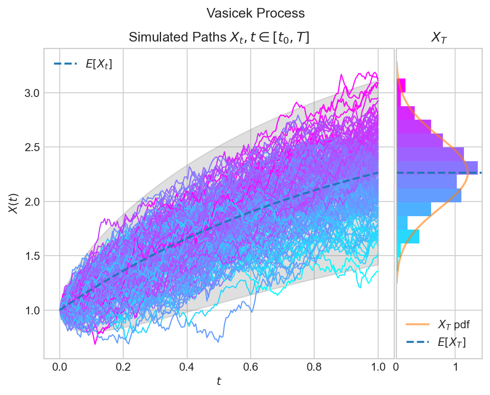
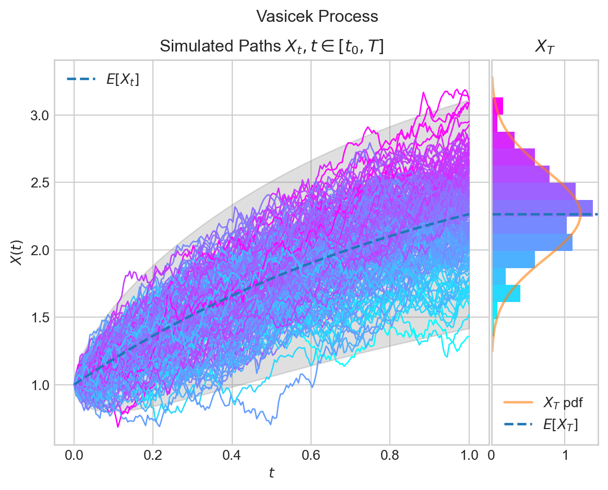

Show the code
from aleatory.processes import Vasicek
process = Vasicek(theta=1, mu=3, sigma=0.5);
fig = process.draw(n=200, N=200, envelope=True, colormap="cool")
Quasar
January 29, 2025
Early interest rate modelling was based on specifying some dynamics for the instantaneous short rate process \(r(t)\). Some classical short-rate models are : the Vasicek (1977) model, the Dothan (1978) model, the Cox, Ingersoll and Ross(1985) model and the Exponential-Vasicek model. These are all equilibrium, endogenous term-structure models, meaning that the current yield curve \(P(t,T)\) is an output of the model rather than an input of the model.
In a no-arbitrage (exogenous) model, today’s term structure of interest rates is an input. This means that you always get your yield curve back from the model and is independent of the parameters, so this is extremely powerful. This means that we take the observed actual rates while constructing the model and estimate the unobserved rates.
The HJM framework described a clear path from equilibrium towards term-structure models.
Historically, equilibrium models start with assumptions about economic variables and derive a process for the short rate, which means that the current term structure of interest rates is an output, rather than an input to the model. Such models are also called endogenous models.
The Vasicek model has the short-rate dynamics:
\[ \begin{align*} dr(t) = \lambda(\theta - r(t))dt + \eta dW(t) \end{align*} \tag{1}\]

I generated these beautiful visualizations using the python library aleatory, maintained by one of my favorite quants Dialid Santiago.
To simulate this model, we need to calibrate this model to the yield curve. Obviously, we need to choose the values of the parameters \(\lambda\), \(\theta\), \(\eta\) such that the yield curve will be recovered. Very likely, there will be not enough flexibility with \(3\) parameters to fit to the yield curve, which is built by tens or hundreds of market instruments. Here, we have only \(3\) degrees of freedom.
Of course, we can also consider models where the model parameters \(\lambda\), \(\theta\) and \(\eta\) are time-dependent, and they have a term-structure to have more flexibility. But, that’s an issue, because actually we need to perform calibration. Calibration means that we need to optimize a target function. We take the yield curve or zero-coupon bond quotes from the market and we calibrate using Levenberg-Marquardt or any other optimization routine and we find those time-dependent parameters. This can be very computationally expensive.
However, in term-structure models, the model parameter e.g. \(\theta\) is directly given in terms of market instruments. There is no need to perform any calibration to fit the yield curve.
We can still use calibration to fit other model parameters e.g. mean reversion \(\lambda\) or \(\eta\) to market instruments such as swaptions. But, we don’t need to do it for fitting to the yield curve.
So, the HJM framework is extremely powerful. You always get your yield curve back from the model and it is independent of the parameters.
Fitting to the yield curve is a necessary condition, when it comes to arbitrage. If we cannot fit to the yield curve, there is no point to fit to anything else. We are already generating arbitrage on \(\Delta\). It means that, if we have an exotic derivative, our model may fit nicely to the exotic derivative prices, but we didn’t calibrate the model to the yield curve. So, the sensitivity of the generated yield curve to simple instruments is completely off.
The Cox-Ingersoll and Ross(CIR) model has the short-rate dynamics:
\[ \begin{align*} dr(t) = \lambda(\theta - r(t))dt + \gamma \sqrt{r(t)}dW(t) \end{align*} \tag{2}\]
The Heath-Jarrow-Morton framework is a global framework for describing all the interest rate models. It gives a whole different perspective on how to look at interest rate models.
It represents a class of models that are derived by directly modeling the dynamics of instantaneous forward rates \(f(t,T)\).
The HJM framework also provides an explicit relation between the volatility of instantaneous forward rates \(f(t,T)\) and its drift-rate, such that the model will be always arbitrage free. As a next-step, if we change to a different volatility parameter, we may end up with different models. However, it’s still guaranteed, that those models will be arbitrage free. We will still have a number of model parameters that we can use to calibrate the model, which will not be the case for equilibrium models. By changing the volaility part, we can switch between different models.
In the HJM framework, the dynamics of the instantaneous forward rate \(f(t,T)\) are of main interest. It is assumed that the instantaneous forward rate has the real-world dynamics:
\[ df(t,T) = \alpha^{\mathbb{P}}(t,T)dt + \bar{\eta}(t,T)dW^{\mathbb{P}}(t) \tag{3}\]
for any time \(t < T\) with the corresponding drift term \(\alpha^{\mathbb{P}}(t,T)\) and the volatility term \(\bar{\eta}(t,T)\). Here,
\[ f(0,T) = -\frac{\partial}{\partial T}P(0,T) \]
We also define the money-savings account by,
\[ M(t) := \exp\left(\int_0^T f(z,z) dz \right) \tag{4}\]
An important result within the HJM framework is the no-arbitrage relation between the drift \(\alpha^{\mathbb{Q}}(t,T)\) and the volatility structure \(\bar{\eta}(t,T)\). I proceed to derive this relationship.
By definition: \[ f(t,T) = - \frac{\partial }{\partial t}(\ln P(t,T)) \]
therefore:
\[ \ln P(t,T) = -\int_t^T f(t,u) du \]
The general form of differentiation under the integral sign states that, if \(f(t,x)\) is continuously differentiable, we have:
\[ \frac{d}{dx}\int_{a(x)}^{b(x)} f(t,x)dx = f(x,b(x)) b'(x) - f(x,a(x))a'(x) + \int_{a(x)}^{b(x)} \frac{\partial f}{\partial x}(t,x)dx \]
Remember,
\[ \begin{align*} d(\ln P( t,T)) & =-d\left(\int _{t}^{T} f( t,u) du\right) dt\\ & =-\left( f( t,T)\frac{d}{dt}( T) -f( t,t)\frac{d}{dt}( t) +\int _{t}^{T}\frac{df( t,u)}{dt} du\right) dt\\ & =-\left( 0-r( t) dt+\int _{t}^{T} df( t,u) du\right)\\ & =r( t) dt-\int _{t}^{T} df( t,u) du\\ & =r( t) dt-\int _{t}^{T}\left[ \alpha ^{\mathbb{P}}( t,u) dt\ +\ \overline{\eta }( t,u) dW^{\mathbb{P}}( t)\right] du\\ & =\left[ r( t) -\int _{t}^{T} \alpha ^{\mathbb{P}}( t,u) du\right] dt+\left[\int _{t}^{T}\overline{\eta }( t,u) du\right] dW^{\mathbb{P}}( t) \end{align*} \]
Set
\[ \begin{align*} \gamma(t,T) := \int_t^T \bar{\eta}(t,u)du \end{align*} \]
It follows that the dynamics of the log zero-coupon bond price is:
\[ d(\ln P(t,T)) = \left[ r( t) -\int _{t}^{T} \alpha ^{\mathbb{P}}( t,u) du\right] dt + \gamma(t,T)dW^{\mathbb{P}}(t) \tag{5}\]
So, we have:
\[ \begin{align*} d\left( e^{x}\right) & =e^{x} dx+\frac{1}{2} e^{x}( dx)^{2}\\ d( P( t,T)) & =P( t,T)\left\{\left( r( t) -\int _{t}^{T} \alpha ^{\mathbb{P}}( t,u) du\right) dt+\gamma ( t,T) dW^{\mathbb{P}}( t) +\frac{1}{2} \gamma ^{2}( t,T) dt\right\} \end{align*} \tag{6}\]
Consequently, the dynamics of ther discounted asset-price process:
\[ \begin{align*} d\left(\frac{P( t,T)}{M( t)}\right) & =P( t,T) d\left(\frac{1}{M( t)}\right) +\frac{1}{M( t)} dP( t,T) +dP( t,T) \cdot d\left(\frac{1}{M( t)}\right)\\ & =P( t,T) \cdot \left( -\frac{1}{M( t)^{2}}\right) dM( t)\\ & +\frac{P( t,T)}{M( t)}\left[\left( \frac{1}{2}\gamma ^{2}( t,T) +r( t) -\int _{t}^{T} \alpha ^{\mathbb{P}}( t,u) du\right) dt+\gamma ( t,T) dW^{\mathbb{P}}( t)\right]\\ & =P( t,T)\left\{\frac{1}{2}\gamma ^{2}( t,T) -\cancel{\frac{r( t)}{M( t)}} +\cancel{\frac{r( t)}{M( t)}} -\frac{1}{M( t)}\left(\int _{t}^{T} \alpha ^{\mathbb{P}}( t,u) du\right)\right\} dt\\ &+\frac{P(t,T)}{M( t)} \gamma ( t,T) dW^{\mathbb{P}}( t)\\ & =\frac{P( t,T)}{M( t)}\left[\left(\frac{1}{2} \gamma ^{2}( t,T) -\int _{t}^{T} \alpha ^{\mathbb{P}}( t,u) du\right) dt+\gamma ( t,T) dW^{\mathbb{P}}( t)\right]\\ &= \frac{P(t,T)}{M( t)}\gamma(t,T)\left[\frac{1}{\gamma(t,T)}\left( \frac{1}{2}\gamma ^{2}( t,T) -\int _{t}^{T} \alpha ^{\mathbb{P}}( t,u) du\right) dt+ dW^{\mathbb{P}}( t)\right] \end{align*} \]
Define the likelihood process \(L(t)\) as :
\[ dL_t = L(t) \theta(t) dW^{\mathbb{P}}(t), \quad \theta(t) = \frac{1}{\gamma(t,T)}\left( \frac{1}{2}\gamma ^{2}( t,T) -\int _{t}^{T} \alpha ^{\mathbb{P}}( t,u) du\right) \]
and the probability measure \(\mathbb{Q}\) by:
\[ dW^{\mathbb{Q}}(t) = \theta(t) dt + dW^{\mathbb{P}}(t) \]
By Girsanov, \(W^{\mathbb{Q}}(t)\) is \(\mathbb{Q}\)-standard brownian motion. It follows that the \(\mathbb{Q}\)-dynamics of the discount process is:
\[ \begin{align*} d\left(\frac{P(t,T)}{M(t)}\right) = \frac{P(t,T)}{M( t)}\gamma(t,T)dW^{\mathbb{Q}}(t) \end{align*} \tag{7}\]
So, the discounted zero-coupon bond price process is a martingale under \(\mathbb{Q}\)-measure. It is driftless. The existence of a risk-neutral measure implies that there is no arbitrage in this model.
If the instantaneous forward-rate \(f(t,T)\) has \(\mathbb{Q}\)-dynamics:
\[ df(t,T) = \alpha^{\mathbb{Q}}(t,T)dt + \bar{\eta}(t,T)dW^{\mathbb{Q}}(t) \]
then the discounted bond price process must have the \(\mathbb{Q}\)-dynamics:
\[ d\left(\frac{P(t,T)}{M( t)}\right) = \frac{P(t,T)}{M( t)}\gamma(t,T)\left[\frac{1}{\gamma(t,T)}\left( \frac{1}{2}\gamma ^{2}( t,T) -\int _{t}^{T} \alpha ^{\mathbb{Q}}( t,u) du\right) dt+ dW^{\mathbb{P}}( t)\right] \tag{8}\]
But, according to Equation 7, this process must be driftless. Thus, to enforce no-arbitrage:
\[ \frac{1}{2}\gamma ^{2}( t,T) -\int _{t}^{T} \alpha ^{\mathbb{Q}}( t,u) du = 0 \]
Differentiating with respect to \(T\), we get:
\[ \frac{1}{2}\frac{d}{dT}\gamma^2(t,T) = \frac{d}{dT}\left(\int _{t}^{T} \alpha ^{\mathbb{Q}}( t,u) du \right) \]
and it follows that:
\[ \gamma(t,T) \bar{\eta}(t,T) = \alpha^{\mathbb{Q}}(t,T) \]
We can summarize this result in the form of a proposition.
Proposition 1 (HJM Arbitrage-free condition.) Under the HJM framework, for the forward rates modeled using the stochastic differential equation:
\[ df(t,T) = \alpha^{\mathbb{Q}}(t,T)dt + \bar{\eta}(t,T)dW^{\mathbb{Q}}(t) \tag{9}\]
the no-arbitrage drift condition is given by:
\[ \alpha^{\mathbb{Q}}(t,T) = \bar{\eta}(t,T) \int_t^T \bar{\eta}(t,z)dz \tag{10}\]
Thus, the dynamics of the instantaneous forward rate \(f(t,T)\) are fully determined by its volatility structure \(\bar{\eta}(t,T)\).
Under the HJM framework, we have just seen that volatilities are the most important as they define the arbitrage-free or risk-neutral dynamics for the instantaneous forward rates.
Now, we’d like to find out the dynamics of the short-rate.
By using the relation that \(f(t,t) = r(t)\) and by integrating the SDEs, we obtain the short rate dynamics, we obtain the short rate dynamics under the HJM framework in the form:
\[ \begin{align*} f(t,T) = f(0,T) + \int_{0}^t \alpha^{\mathbb{Q}}(s,T)ds + \int_0^t \bar{\eta}(s,T)dW^{\mathbb{Q}}(s) \end{align*} \tag{11}\]
If we set \(T = t\), the short rate is given by:
\[ r(t) \equiv f(t,t) = f(0,t) + \int_0^t \alpha^{\mathbb{Q}}(z,t)dz + \int_0^t \bar{\eta}(z,t) dW^{\mathbb{Q}}(z) \tag{12}\]
The last integral can be expressed in a different manner:
\[ \begin{align*} \int_{0}^{t}\overline{\eta }( z,t) dW^{\mathbb{Q}}( z) & =\int _{0}^{t}\overline{\eta }( z,z) dW^{\mathbb{Q}}( z) +\int _{0}^{t}(\overline{\eta }( z,t) -\overline{\eta }( z,z)) dW^{\mathbb{Q}}( z)\\ & =\int _{0}^{t}\overline{\eta }( z,z) dW^{\mathbb{Q}}( z) +\int _{0}^{t}\left(\int _{u=z}^{u=t}\frac{\partial }{\partial u}\overline{\eta }( z,u) du\right) dW^{\mathbb{Q}}( z) \end{align*} \]
By Fubini’s theorem, we have:
\[ \begin{aligned} \int _{z=0}^{z=t}\left(\int_{u=z}^{u=t}\frac{\partial }{\partial u}\overline{\eta }( z,u) du\right) dW^{\mathbb{Q}}( z) & =\int _{0}^{t}\left(\int _{0}^{z}\frac{\partial }{\partial z}\overline{\eta }( z,u) dW^{\mathbb{Q}}( z)\right) du \end{aligned} \]
And:
\[ \begin{aligned} \int_0^t \alpha^{\mathbb{Q}}(z,t) dz & =\int_0^t \alpha(z,z) dz + \int _{0}^{t}\left(\int _{0}^{z}\frac{\partial }{\partial z}\alpha( z,u) dz\right) du \end{aligned} \]
Furthermore,
\[ f(0,t) = f(0,0) + \int_0^t \frac{\partial }{\partial u}f(0,u) du \]
and \(f(0,0) = r(0)\).
By collecting all the terms the Equation 9 becomes:
The Leibnitz integral rule is:
\[ \frac{d}{d\alpha} \int_{a(\alpha)}^{b(\alpha)}f(x,\alpha)dx = f(b,\alpha) \frac{\partial}{\partial \alpha}b(\alpha) - f(a,\alpha)\frac{\partial}{\partial \alpha}a(\alpha) + \int_{a(\alpha)}^{b(\alpha)}\frac{\partial}{\partial \alpha}f(x,\alpha)dx \tag{13}\]
By applying the Leibnitz integral rule, we have:
---
title: "The HJM Framework"
author: "Quasar"
date: "2025-01-29"
categories: [Rates Modelling]
image: "image.jpg"
toc: true
toc-depth: 3
format:
html:
code-tools: true
code-block-border-left: true
code-annotations: below
highlight-style: pygments
---
# The HJM Framework
## Introduction
Early interest rate modelling was based on specifying some dynamics for the instantaneous short rate process $r(t)$. Some classical short-rate models are : the Vasicek (1977) model, the Dothan (1978) model, the Cox, Ingersoll and Ross(1985) model and the Exponential-Vasicek model. These are all equilibrium, *endogenous term-structure models*, meaning that the current yield curve $P(t,T)$ is an output of the model rather than an input of the model.
In a *no-arbitrage (exogenous)* model, today's term structure of interest rates is an input. This means that you always get your yield curve back from the model and is independent of the parameters, so this is extremely powerful. This means that we take the observed actual rates while constructing the model and estimate the unobserved rates.
The HJM framework described a clear path from equilibrium towards term-structure models.
## Equilibrium versus Term-Structure Models
Historically, equilibrium models start with assumptions about economic variables and derive a process for the short rate, which means that the current term structure of interest rates is an output, rather than an input to the model. Such models are also called *endogenous* models.
The Vasicek model has the short-rate dynamics:
$$
\begin{align*}
dr(t) = \lambda(\theta - r(t))dt + \eta dW(t)
\end{align*}
$${#eq-vasicek-model}
```{python}
# | code-fold: true
# | code-summary: "Show the code"
# | code-link: true
from aleatory.processes import Vasicek
process = Vasicek(theta=1, mu=3, sigma=0.5);
fig = process.draw(n=200, N=200, envelope=True, colormap="cool")
```
I generated these beautiful visualizations using the python library [`aleatory`](https://github.com/quantgirluk/aleatory), maintained by one of my favorite quants [Dialid Santiago](https://quantgirl.blog).
To simulate this model, we need to calibrate this model to the yield curve. Obviously, we need to choose the values of the parameters $\lambda$, $\theta$, $\eta$ such that the yield curve will be recovered. Very likely, there will be not enough flexibility with $3$ parameters to fit to the yield curve, which is built by tens or hundreds of market instruments. Here, we have only $3$ degrees of freedom.
Of course, we can also consider models where the model parameters $\lambda$, $\theta$ and $\eta$ are time-dependent, and they have a term-structure to have more flexibility. But, that's an issue, because actually we need to perform calibration. Calibration means that we need to optimize a target function. We take the yield curve or zero-coupon bond quotes from the market and we calibrate using Levenberg-Marquardt or any other optimization routine and we find those time-dependent parameters. This can be very computationally expensive.
However, in term-structure models, the model parameter e.g. $\theta$ is directly given in terms of market instruments. There is no need to perform any calibration to fit the yield curve.
We can still use calibration to fit other model parameters e.g. mean reversion $\lambda$ or $\eta$ to market instruments such as swaptions. But, we don't need to do it for fitting to the yield curve.
So, the HJM framework is extremely powerful. You always get your yield curve back from the model and it is independent of the parameters.
Fitting to the yield curve is a necessary condition, when it comes to arbitrage. If we cannot fit to the yield curve, there is no point to fit to anything else. We are already generating arbitrage on $\Delta$. It means that, if we have an exotic derivative, our model may fit nicely to the exotic derivative prices, but we didn't calibrate the model to the yield curve. So, the sensitivity of the generated yield curve to simple instruments is completely off.
The Cox-Ingersoll and Ross(CIR) model has the short-rate dynamics:
$$
\begin{align*}
dr(t) = \lambda(\theta - r(t))dt + \gamma \sqrt{r(t)}dW(t)
\end{align*}
$${#eq-cox-ingersoll-ross-model}
```{python}
# | code-fold: true
# | code-summary: "Show the code"
# | code-link: true
from aleatory.processes import CIRProcess
process = CIRProcess(theta=1.0, mu=2.0, sigma=1.0, initial=10.0, T=3.0)
fig = process.draw(n=200, N=200, envelope=False, colormap="summer")
```
## The HJM Framework
The Heath-Jarrow-Morton framework is a global framework for describing all the interest rate models. It gives a whole different perspective on how to look at interest rate models.
It represents a class of models that are derived by directly modeling the dynamics of *instantaneous forward rates* $f(t,T)$.
The HJM framework also provides an explicit relation between the volatility of instantaneous forward rates $f(t,T)$ and its drift-rate, such that the model will be always arbitrage free. As a next-step, if we change to a different volatility parameter, we may end up with different models. However, it's still guaranteed, that those models will be arbitrage free. We will still have a number of model parameters that we can use to calibrate the model, which will not be the case for equilibrium models. By changing the volaility part, we can switch between different models.
### Instantaneous forward rate
In the HJM framework, the dynamics of the instantaneous forward rate $f(t,T)$ are of main interest. It is assumed that the instantaneous forward rate has the real-world dynamics:
$$
df(t,T) = \alpha^{\mathbb{P}}(t,T)dt + \bar{\eta}(t,T)dW^{\mathbb{P}}(t)
$${#eq-dynamics-of-the-instantaneous-forward-rate}
for any time $t < T$ with the corresponding drift term $\alpha^{\mathbb{P}}(t,T)$ and the volatility term $\bar{\eta}(t,T)$. Here,
$$
f(0,T) = -\frac{\partial}{\partial T}P(0,T)
$$
We also define the money-savings account by,
$$
M(t) := \exp\left(\int_0^T f(z,z) dz \right)
$${#eq-money-savings-account}
### No-arbitrage condition
An important result within the HJM framework is the no-arbitrage relation between the drift $\alpha^{\mathbb{Q}}(t,T)$ and the volatility structure $\bar{\eta}(t,T)$. I proceed to derive this relationship.
By definition:
$$
f(t,T) = - \frac{\partial }{\partial t}(\ln P(t,T))
$$
therefore:
$$
\ln P(t,T) = -\int_t^T f(t,u) du
$$
The general form of differentiation under the integral sign states that, if $f(t,x)$ is continuously differentiable, we have:
$$
\frac{d}{dx}\int_{a(x)}^{b(x)} f(t,x)dx = f(x,b(x)) b'(x) - f(x,a(x))a'(x) + \int_{a(x)}^{b(x)} \frac{\partial f}{\partial x}(t,x)dx
$$
Remember,
$$
\begin{align*}
d(\ln P( t,T)) & =-d\left(\int _{t}^{T} f( t,u) du\right) dt\\
& =-\left( f( t,T)\frac{d}{dt}( T) -f( t,t)\frac{d}{dt}( t) +\int _{t}^{T}\frac{df( t,u)}{dt} du\right) dt\\
& =-\left( 0-r( t) dt+\int _{t}^{T} df( t,u) du\right)\\
& =r( t) dt-\int _{t}^{T} df( t,u) du\\
& =r( t) dt-\int _{t}^{T}\left[ \alpha ^{\mathbb{P}}( t,u) dt\ +\ \overline{\eta }( t,u) dW^{\mathbb{P}}( t)\right] du\\
& =\left[ r( t) -\int _{t}^{T} \alpha ^{\mathbb{P}}( t,u) du\right] dt+\left[\int _{t}^{T}\overline{\eta }( t,u) du\right] dW^{\mathbb{P}}( t)
\end{align*}
$$
Set
$$
\begin{align*}
\gamma(t,T) := \int_t^T \bar{\eta}(t,u)du
\end{align*}
$$
It follows that the dynamics of the log zero-coupon bond price is:
$$
d(\ln P(t,T)) = \left[ r( t) -\int _{t}^{T} \alpha ^{\mathbb{P}}( t,u) du\right] dt + \gamma(t,T)dW^{\mathbb{P}}(t)
$${#eq-dynamics-of-log-of-zcb}
So, we have:
$$
\begin{align*}
d\left( e^{x}\right) & =e^{x} dx+\frac{1}{2} e^{x}( dx)^{2}\\
d( P( t,T)) & =P( t,T)\left\{\left( r( t) -\int _{t}^{T} \alpha ^{\mathbb{P}}( t,u) du\right) dt+\gamma ( t,T) dW^{\mathbb{P}}( t) +\frac{1}{2} \gamma ^{2}( t,T) dt\right\}
\end{align*}
$${#eq-dynamics-of-zcb}
Consequently, the dynamics of ther discounted asset-price process:
$$
\begin{align*}
d\left(\frac{P( t,T)}{M( t)}\right) & =P( t,T) d\left(\frac{1}{M( t)}\right) +\frac{1}{M( t)} dP( t,T) +dP( t,T) \cdot d\left(\frac{1}{M( t)}\right)\\
& =P( t,T) \cdot \left( -\frac{1}{M( t)^{2}}\right) dM( t)\\
& +\frac{P( t,T)}{M( t)}\left[\left( \frac{1}{2}\gamma ^{2}( t,T) +r( t) -\int _{t}^{T} \alpha ^{\mathbb{P}}( t,u) du\right) dt+\gamma ( t,T) dW^{\mathbb{P}}( t)\right]\\
& =P( t,T)\left\{\frac{1}{2}\gamma ^{2}( t,T) -\cancel{\frac{r( t)}{M( t)}} +\cancel{\frac{r( t)}{M( t)}} -\frac{1}{M( t)}\left(\int _{t}^{T} \alpha ^{\mathbb{P}}( t,u) du\right)\right\} dt\\
&+\frac{P(t,T)}{M( t)} \gamma ( t,T) dW^{\mathbb{P}}( t)\\
& =\frac{P( t,T)}{M( t)}\left[\left(\frac{1}{2} \gamma ^{2}( t,T) -\int _{t}^{T} \alpha ^{\mathbb{P}}( t,u) du\right) dt+\gamma ( t,T) dW^{\mathbb{P}}( t)\right]\\
&= \frac{P(t,T)}{M( t)}\gamma(t,T)\left[\frac{1}{\gamma(t,T)}\left( \frac{1}{2}\gamma ^{2}( t,T) -\int _{t}^{T} \alpha ^{\mathbb{P}}( t,u) du\right) dt+ dW^{\mathbb{P}}( t)\right]
\end{align*}
$$
Define the likelihood process $L(t)$ as :
$$
dL_t = L(t) \theta(t) dW^{\mathbb{P}}(t), \quad \theta(t) = \frac{1}{\gamma(t,T)}\left( \frac{1}{2}\gamma ^{2}( t,T) -\int _{t}^{T} \alpha ^{\mathbb{P}}( t,u) du\right)
$$
and the probability measure $\mathbb{Q}$ by:
$$
dW^{\mathbb{Q}}(t) = \theta(t) dt + dW^{\mathbb{P}}(t)
$$
By Girsanov, $W^{\mathbb{Q}}(t)$ is $\mathbb{Q}$-standard brownian motion. It follows that the $\mathbb{Q}$-dynamics of the discount process is:
$$
\begin{align*}
d\left(\frac{P(t,T)}{M(t)}\right) = \frac{P(t,T)}{M( t)}\gamma(t,T)dW^{\mathbb{Q}}(t)
\end{align*}
$${#eq-discounted-price-process-is-a-martingale-under-Q}
So, the discounted zero-coupon bond price process is a martingale under $\mathbb{Q}$-measure. It is driftless. The existence of a risk-neutral measure implies that there is no arbitrage in this model.
If the instantaneous forward-rate $f(t,T)$ has $\mathbb{Q}$-dynamics:
$$
df(t,T) = \alpha^{\mathbb{Q}}(t,T)dt + \bar{\eta}(t,T)dW^{\mathbb{Q}}(t)
$$
then the discounted bond price process must have the $\mathbb{Q}$-dynamics:
$$
d\left(\frac{P(t,T)}{M( t)}\right) = \frac{P(t,T)}{M( t)}\gamma(t,T)\left[\frac{1}{\gamma(t,T)}\left( \frac{1}{2}\gamma ^{2}( t,T) -\int _{t}^{T} \alpha ^{\mathbb{Q}}( t,u) du\right) dt+ dW^{\mathbb{P}}( t)\right]
$${#eq-discounted-bond-price-dynamics-under-Q}
But, according to @eq-discounted-price-process-is-a-martingale-under-Q, this process must be driftless. Thus, to enforce no-arbitrage:
$$
\frac{1}{2}\gamma ^{2}( t,T) -\int _{t}^{T} \alpha ^{\mathbb{Q}}( t,u) du = 0
$$
Differentiating with respect to $T$, we get:
$$
\frac{1}{2}\frac{d}{dT}\gamma^2(t,T) = \frac{d}{dT}\left(\int _{t}^{T} \alpha ^{\mathbb{Q}}( t,u) du \right)
$$
and it follows that:
$$
\gamma(t,T) \bar{\eta}(t,T) = \alpha^{\mathbb{Q}}(t,T)
$$
We can summarize this result in the form of a proposition.
:::{#prp-hjm-arbitrage-free-condition}
### HJM Arbitrage-free condition.
Under the HJM framework, for the forward rates modeled using the stochastic differential equation:
$$
df(t,T) = \alpha^{\mathbb{Q}}(t,T)dt + \bar{\eta}(t,T)dW^{\mathbb{Q}}(t)
$${#eq-q-dynamics-of-forward-rates-under-hjm}
the no-arbitrage drift condition is given by:
$$
\alpha^{\mathbb{Q}}(t,T) = \bar{\eta}(t,T) \int_t^T \bar{\eta}(t,z)dz
$${#eq-no-arbitrage-drift-condition-in-hjm}
:::
Thus, the dynamics of the instantaneous forward rate $f(t,T)$ are fully determined by its volatility structure $\bar{\eta}(t,T)$.
## Short rate dynamics under HJM
Under the HJM framework, we have just seen that volatilities are the most important as they define the arbitrage-free or risk-neutral dynamics for the instantaneous forward rates.
Now, we'd like to find out the dynamics of the short-rate.
By using the relation that $f(t,t) = r(t)$ and by integrating the SDEs, we obtain the short rate dynamics, we obtain the short rate dynamics under the HJM framework in the form:
$$
\begin{align*}
f(t,T) = f(0,T) + \int_{0}^t \alpha^{\mathbb{Q}}(s,T)ds + \int_0^t \bar{\eta}(s,T)dW^{\mathbb{Q}}(s)
\end{align*}
$${#eq-forward-rate-dynamics}
If we set $T = t$, the short rate is given by:
$$
r(t) \equiv f(t,t) = f(0,t) + \int_0^t \alpha^{\mathbb{Q}}(z,t)dz + \int_0^t \bar{\eta}(z,t) dW^{\mathbb{Q}}(z)
$${#eq-short-rate}
The last integral can be expressed in a different manner:
$$
\begin{align*}
\int_{0}^{t}\overline{\eta }( z,t) dW^{\mathbb{Q}}( z) & =\int _{0}^{t}\overline{\eta }( z,z) dW^{\mathbb{Q}}( z) +\int _{0}^{t}(\overline{\eta }( z,t) -\overline{\eta }( z,z)) dW^{\mathbb{Q}}( z)\\
& =\int _{0}^{t}\overline{\eta }( z,z) dW^{\mathbb{Q}}( z) +\int _{0}^{t}\left(\int _{u=z}^{u=t}\frac{\partial }{\partial u}\overline{\eta }( z,u) du\right) dW^{\mathbb{Q}}( z)
\end{align*}
$$
By Fubini's theorem, we have:
$$
\begin{aligned}
\int _{z=0}^{z=t}\left(\int_{u=z}^{u=t}\frac{\partial }{\partial u}\overline{\eta }( z,u) du\right) dW^{\mathbb{Q}}( z) & =\int _{0}^{t}\left(\int _{0}^{z}\frac{\partial }{\partial z}\overline{\eta }( z,u) dW^{\mathbb{Q}}( z)\right) du
\end{aligned}
$$
And:
$$
\begin{aligned}
\int_0^t \alpha^{\mathbb{Q}}(z,t) dz & =\int_0^t \alpha(z,z) dz + \int _{0}^{t}\left(\int _{0}^{z}\frac{\partial }{\partial z}\alpha( z,u) dz\right) du
\end{aligned}
$$
Furthermore,
$$
f(0,t) = f(0,0) + \int_0^t \frac{\partial }{\partial u}f(0,u) du
$$
and $f(0,0) = r(0)$.
By collecting all the terms the @eq-q-dynamics-of-forward-rates-under-hjm becomes:
The Leibnitz integral rule is:
$$
\frac{d}{d\alpha} \int_{a(\alpha)}^{b(\alpha)}f(x,\alpha)dx = f(b,\alpha) \frac{\partial}{\partial \alpha}b(\alpha) - f(a,\alpha)\frac{\partial}{\partial \alpha}a(\alpha) + \int_{a(\alpha)}^{b(\alpha)}\frac{\partial}{\partial \alpha}f(x,\alpha)dx
$${#eq-leibnitz-integral-rule}
By applying the Leibnitz integral rule, we have: